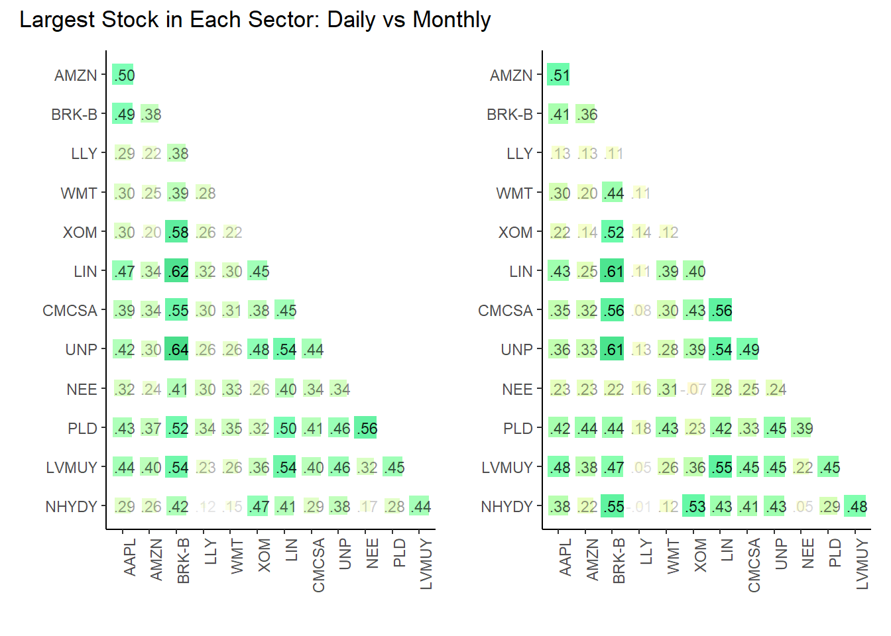
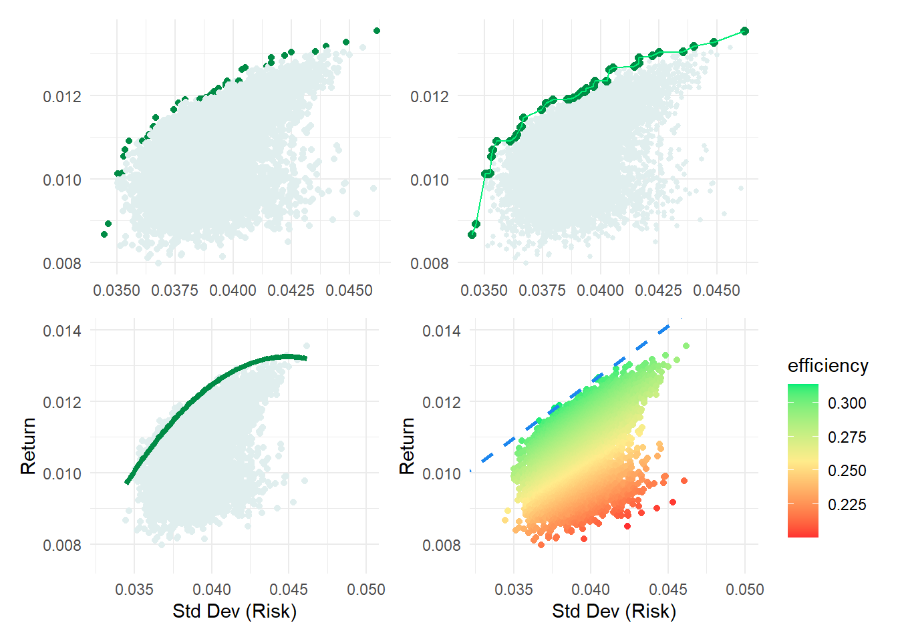

library(tidyverse); library(patchwork); library (ggcorrplot); library(gt)
library(tidyquant)
library(MASS) # write.matrix
# library(dplyr); library(tidyr); library(purrr)
# library(ggplot)Contents
- Define the potential portfolios (= sets of assets)
- Retrieve returns for each periodicity; aka, frequency
- Add analysis list-column: volatility, avg return, correlation matrix
- Correlation
- Single stocks are better diversifiers
- Visualize correlation
- Simulation
- Select the portfolio (set)
- Bias the random weights
- Setup the simulation; i.e., functions
- Run the simulation
- Visualize
- Add a second CML
Define the potential portfolios (= sets of assets)
The container in this approach is stock_sets, a dataframe we initialize (as our TOC) with three columns:
- set_id
- description
- symbols: a list of tickers
Each row of the stock_sets dataframe hold an entire portfolio including these identifiers plus the returns (via nested_data), and the analysis. The latter two are added as list-columns which are versatile objects: list-items can include dataframes, vectors, and even other lists.
# First row of stock_sets is (portfolio of) sector ETFs:
sector_11etf_list <- c("XLK", # Technology
"XLV", # Health Care
"XLF", # Financials
"XLY", # Consumer Discretionary
"XLP", # Consumer Staples
"XLE", # Energy
"XLU", # Utilities
"XLI", # Industrials
"XLB", # Materials
"XLRE", # Real Estate
"XLC") # Communication Services
# Second row of stock_sets is (portfolio of) style ETFs:
size_style_etfs <- c("IWF", # Large-Cap Growth
"IWD", # Large-Cap Value
"SPY", # Large-Cap Blend
"IWP", # Mid-Cap Growth
"IWS", # Mid-Cap Value
"MDY", # Mid-Cap Blend
"IWO", # Small-Cap Growth
"IWN", # Small-Cap Value
"IWM") # Small-Cap Blend
# Third row is largest (by market cap) company in each sector:
large_mid_caps <- read_csv("large_mid_caps.csv")
large_mid_caps <- large_mid_caps |> rename_at('Market Cap', ~ 'Capitalization')
large_mid_caps$Industry <- as_factor(large_mid_caps$Industry)
large_mid_caps$Sector <- as_factor(large_mid_caps$Sector)
# select the largest (by Market Cap) in each Industry
top_in_sector <- large_mid_caps |>
group_by(Sector) |>
arrange(desc(Capitalization)) |>
slice(1)
remove_rows <- c(7, 8, 15, 17)
top_in_sector <- top_in_sector[-remove_rows,]
# This is the essential stock_sets dataframe
stock_sets <- tibble(
set_id = c("11_sectors",
"9_styles",
"13_top_in_sector"),
description = c("All 11 Sectors",
"All 9 Styles",
"Top Market Cap in each of 13 Sectors"),
# this is a list column, see https://adv-r.hadley.nz/vectors-chap.html#list-columns
symbols = list(sector_11etf_list, size_style_etfs, top_in_sector$Ticker)
)
date_start <- "2013-01-01"
date_end <- "2023-11-17"Retrieve returns for each frequency; aka, periodicity
Each portfolio is a set of tickers/symbols. For each of the portfolio’s symbols (aka, tickers), the get_returns function retrieves log returns into three dataframes; one for each frequency:
- daily
- weekly
- monthly
We will call the get_returns function via map (purrr is one of my favorite packagse!) to create a new list column called nested_data. Each row of nested_data will contain a list of three dataframes, one for each period. These dataframes will contain the log returns for each ticker in the set.
# This will add the nested_data list-column. For example, we
# can use stock_sets$nested_data[[n]]$daily$daily.returns to
# retrieve daily.returns for the nth portfolio
get_returns <- function(symbols, start_date, end_date) {
mult_stocks <- tq_get(symbols, get = "stock.prices",
from = start_date, to = end_date)
periods <- c("daily", "weekly", "monthly")
returns_list <- lapply(periods, function(period) {
mult_stocks |>
group_by(symbol) |>
tq_transmute(select = adjusted,
mutate_fun = periodReturn,
period = period,
type = "log")
})
names(returns_list) <- periods
return(returns_list)
}
# Nest return data for each stock set
stock_sets <- stock_sets |>
mutate(nested_data = map(symbols,
~ get_returns(.x, date_start, date_end)))
print(stock_sets)# A tibble: 3 × 4
set_id description symbols nested_data
<chr> <chr> <list> <list>
1 11_sectors All 11 Sectors <chr [11]> <named list>
2 9_styles All 9 Styles <chr [9]> <named list>
3 13_top_in_sector Top Market Cap in each of 13 Sectors <chr [13]> <named list>Add analysis list-column: volatility, avg return, correlation matrix
For each portfolio (set of tickers) and periodicity, the analysis list column generates:
- vector of volatilities
- vector of average returns
- correlation matrix (diagonal is 1)
- average correlation (as a rough measure of diversification)
# For example, we can use stock_sets$analysis[[1]]$monthly$corr_matrix
# to retrieve the correlation matrix for the nth portfolio
perform_analysis <- function(data, frequency) {
# Determine the column name for returns based on the frequency
returns_col <- switch(frequency,
"daily" = "daily.returns",
"weekly" = "weekly.returns",
"monthly" = "monthly.returns",
stop("Invalid frequency"))
# Calculate volatilities
volatilities <- data |>
group_by(symbol) |>
summarise(volatility = sd(.data[[returns_col]], na.rm = TRUE)) |>
ungroup()
# Calculate average returns
avg_returns <- data |>
group_by(symbol) |>
summarise(avg_return = mean(.data[[returns_col]], na.rm = TRUE)) |>
ungroup()
# Pivot to wide format for correlation matrix calculation
data_wide <- data |>
group_by(date) |>
pivot_wider(names_from = symbol, values_from = .data[[returns_col]])
# Write files to verify (in Excel) the correlation matrix
# write.csv(data_wide, paste0("data_wide_", frequency, ".csv"), row.names = FALSE)
# Calculate the correlation matrix
corr_matrix <- cor(data_wide[ ,-1], use = "complete.obs")
# write.csv(as.data.frame(corr_matrix), paste0("corr_matrix_", frequency, ".csv"), row.names = TRUE)
# Calculate average correlation
avg_corr <- mean(corr_matrix[lower.tri(corr_matrix)])
return(list(volatilities = volatilities,
avg_returns = avg_returns,
corr_matrix = corr_matrix,
avg_corr = avg_corr))
}
# Applying the perform_analysis function to the stock_sets
stock_sets <- stock_sets |>
mutate(analysis = map(nested_data, ~ {
list(
daily = perform_analysis(.x$daily, "daily"),
weekly = perform_analysis(.x$weekly, "weekly"),
monthly = perform_analysis(.x$monthly, "monthly")
)
}))
# Examine data structure
print(stock_sets)# A tibble: 3 × 5
set_id description symbols nested_data analysis
<chr> <chr> <list> <list> <list>
1 11_sectors All 11 Sectors <chr> <named list> <named list>
2 9_styles All 9 Styles <chr> <named list> <named list>
3 13_top_in_sector Top Market Cap in each of … <chr> <named list> <named list>glimpse(stock_sets)Rows: 3
Columns: 5
$ set_id <chr> "11_sectors", "9_styles", "13_top_in_sector"
$ description <chr> "All 11 Sectors", "All 9 Styles", "Top Market Cap in each …
$ symbols <list> <"XLK", "XLV", "XLF", "XLY", "XLP", "XLE", "XLU", "XLI", "…
$ nested_data <list> [[<grouped_df[28057 x 3]>], [<grouped_df[5819 x 3]>], [<g…
$ analysis <list> [[[<tbl_df[11 x 2]>], [<tbl_df[11 x 2]>], <<matrix[11 x 1…Correlation
Average average correlation
# GPT4 basically wrote this entire chunk: I added it while writing substack
# Prepare a dataframe for the average correlations
avg_corr_data <- tibble(
Portfolio = character(),
Frequency = character(),
Average_Correlation = numeric()
)
# Loop through each portfolio and each frequency
for (i in seq_along(stock_sets$analysis)) {
portfolio_id <- stock_sets$set_id[i]
for (freq in c("daily", "weekly", "monthly")) {
avg_corr <- stock_sets$analysis[[i]][[freq]]$avg_corr
avg_corr_data <- avg_corr_data |>
add_row(
Portfolio = portfolio_id,
Frequency = freq,
Average_Correlation = avg_corr
)
}
}
# Create a wider table format
avg_corr_wide <- avg_corr_data |>
pivot_wider(
names_from = Frequency,
values_from = Average_Correlation,
names_prefix = "Avg_Corr_"
)
# Add a column for the overall average correlation
avg_corr_wide <- avg_corr_wide |>
rowwise() |>
mutate(Avg_Corr_Total = mean(c_across(starts_with("Avg_Corr_")), na.rm = TRUE)) |>
ungroup()
avg_corr_wide |>
gt() |>
tab_header(title = "Average Correlation per Frequency") |>
cols_label(
Portfolio = "Portfolio",
Avg_Corr_daily = "Daily",
Avg_Corr_weekly = "Weekly",
Avg_Corr_monthly = "Monthly",
Avg_Corr_Total = "Avg Avg Corr"
) |>
fmt_number(columns = 2:5, decimals = 3)| Average Correlation per Frequency | ||||
| Portfolio | Daily | Weekly | Monthly | Avg Avg Corr |
|---|---|---|---|---|
| 11_sectors | 0.676 | 0.682 | 0.677 | 0.678 |
| 9_styles | 0.899 | 0.902 | 0.899 | 0.900 |
| 13_top_in_sector | 0.371 | 0.344 | 0.325 | 0.346 |
Single stocks are better diversifiers
create_avg_corr_table <- function(monthly_data, title = "Data Analysis") {
corr_matrix <- monthly_data$corr_matrix
symbols <- rownames(corr_matrix)
# average correlation for each stock excluding the stock itself
avg_correlations_per_stock <- map_dbl(seq_len(nrow(corr_matrix)), function(i) {
row_correlations <- corr_matrix[i, ]
mean(row_correlations[-i], na.rm = TRUE)
})
avg_correlations_df <- data.frame(symbol = symbols,
avg_correlation = avg_correlations_per_stock)
combined_data <- left_join(monthly_data$volatilities,
monthly_data$avg_returns, by = "symbol") |>
left_join(avg_correlations_df, by = "symbol")
gt_table <- combined_data |>
gt() |>
tab_header(title = title) |>
cols_label(
symbol = "Symbol",
volatility = "Volatility",
avg_return = "Avg Return",
avg_correlation = "Correlation(*)"
) |>
fmt_percent(columns = 2:3, decimals = 2) |>
fmt_number(columns = 4, decimals = 2) |>
tab_footnote("(*) Pairwise average(ρ): matrix row/column average excluding diagonal")
return(gt_table)
}
monthly_data <- stock_sets$analysis[[1]]$monthly
create_avg_corr_table(monthly_data, "Sectors, Monthly Returns")| Sectors, Monthly Returns | |||
| Symbol | Volatility | Avg Return | Correlation(*) |
|---|---|---|---|
| XLB | 5.30% | 0.73% | 0.76 |
| XLC | 6.09% | 0.58% | 0.69 |
| XLE | 8.35% | 0.40% | 0.54 |
| XLF | 5.44% | 0.87% | 0.72 |
| XLI | 5.12% | 0.91% | 0.77 |
| XLK | 5.17% | 1.50% | 0.69 |
| XLP | 3.64% | 0.72% | 0.66 |
| XLRE | 5.01% | 0.46% | 0.71 |
| XLU | 4.35% | 0.70% | 0.55 |
| XLV | 3.99% | 1.01% | 0.66 |
| XLY | 5.42% | 1.04% | 0.71 |
| (*) Pairwise average(ρ): matrix row/column average excluding diagonal | |||
monthly_data <- stock_sets$analysis[[3]]$monthly
create_avg_corr_table(monthly_data, "Largest Stock in Sector, Monthly Returns")| Largest Stock in Sector, Monthly Returns | |||
| Symbol | Volatility | Avg Return | Correlation(*) |
|---|---|---|---|
| AAPL | 8.06% | 1.85% | 0.35 |
| AMZN | 8.68% | 1.84% | 0.29 |
| BRK-B | 4.81% | 1.03% | 0.44 |
| CMCSA | 6.50% | 0.77% | 0.38 |
| LIN | 5.21% | 1.15% | 0.42 |
| LLY | 6.47% | 2.08% | 0.11 |
| LVMUY | 6.92% | 1.31% | 0.38 |
| NEE | 5.59% | 1.11% | 0.21 |
| NHYDY | 10.39% | 0.40% | 0.32 |
| PLD | 6.40% | 1.07% | 0.37 |
| UNP | 6.33% | 1.12% | 0.39 |
| WMT | 5.14% | 0.80% | 0.27 |
| XOM | 7.52% | 0.46% | 0.28 |
| (*) Pairwise average(ρ): matrix row/column average excluding diagonal | |||
Visualize Correlation
These step took me too long because I couldn’t wrestle corrplot/ggcorrplot to my ends. I tried various packages but finally settled on the corrr package due to its elegant/tidy construction; e.g., if you use ggplot, you can guess its parameters. As the authors write,
At first, a correlation data frame might seem like an unnecessary complexity compared to the traditional matrix. However, the purpose of corrr is to help use explore these correlations, not to do mathematical or statistical operations. Thus, by having the correlations in a data frame, we can make use of packages that help us work with data frames like dplyr, tidyr, ggplot2, and focus on using data pipelines
library(corrr)
colors_corr_plot <- colorRampPalette(c("firebrick3", "firebrick1", "yellow", "seagreen1", "seagreen4"))
plot_corr <- function(matrix, title) {
matrix_df <- as_cordf(matrix) |> shave()
matrix_df |> rplot(shape = 15, print_cor = TRUE,
colors = colors_corr_plot(5),
legend = FALSE) +
theme(axis.text.x = element_text(angle = 90, hjust = 1))
}
get_corr_matrices <- function(row_df){
analyze_this <- row_df |>
pull(analysis)
corr_daily_matrix <- analyze_this[[1]][["daily"]]$corr_matrix
corr_weekly_matrix <- analyze_this[[1]][["weekly"]]$corr_matrix
corr_monthly_matrix <- analyze_this[[1]][["monthly"]]$corr_matrix
return(list(
corr_daily_matrix = corr_daily_matrix,
corr_weekly_matrix = corr_weekly_matrix,
corr_monthly_matrix = corr_monthly_matrix
))
}
select_row_1 <- stock_sets |> filter(set_id == "9_styles")
three_matrices <- get_corr_matrices(select_row_1)
cp1 <- three_matrices$corr_daily_matrix |> plot_corr("9_styles, daily")
# cp2 <- three_matrices$corr_weekly_matrix |> plot_corr("9_styles, weekly")
cp3 <- three_matrices$corr_monthly_matrix |> plot_corr("9_styles, monthly")
select_row_2 <- stock_sets |> filter(set_id == "11_sectors")
three_matrices <- get_corr_matrices(select_row_2)
cp4 <- three_matrices$corr_daily_matrix |> plot_corr("11_sectors, daily") +
theme(legend.position = "right")
# cp5 <- three_matrices$corr_weekly_matrix |> plot_corr("11_sectors, weekly")
cp6 <- three_matrices$corr_monthly_matrix |> plot_corr("11_sectors, monthly") +
theme(legend.position = "right")
select_row_3 <- stock_sets |> filter(set_id == "13_top_in_sector")
three_matrices <- get_corr_matrices(select_row_3)
cp7 <- three_matrices$corr_daily_matrix |> plot_corr("13_top_in_sector, daily")
# cp8 <- three_matrices$corr_weekly_matrix |> plot_corr("13_top_in_sector, weekly")
cp9 <- three_matrices$corr_monthly_matrix |> plot_corr("13_top_in_sector, monthly")
cp1 + cp4 + plot_annotation("Daily frequency: Styles vs Sectors")
cp3 + cp6 + plot_annotation("Monthly frequency: Styles vs Sectors")cp7 + cp9 + plot_annotation("Largest Stock in Each Sector: Daily vs Monthly")
Simulation
There are four steps here: select the portfolio, bias the random weights (if desired), setup the simulation, and run the simulation.
Simulation: 1. Select the portfolio (set of tickers/symbols)
# Selecting the desired set (e.g., "Set 1")
select_set <- stock_sets |>
filter(set_id == "11_sectors") |>
pull("analysis")
analyze_set <- select_set[[1]]
analyze_period <- analyze_set$monthly
# Extracting components from the selected set
exp_returns_period <- analyze_period$avg_returns$avg_return
names(exp_returns_period) <- analyze_period$avg_returns$symbol
volatilities_period <- analyze_period$volatilities$volatility
names(volatilities_period) <- analyze_period$volatilities$symbol
corr_matrix_period <- analyze_period$corr_matrix
num_stocks_period <- length(volatilities_period)Simulation: 2. Bias the random weights
This is an experiment to see if we can bias the random weights to get a better result. Rather than deduce a formula, I decided to ask, what is a more (or less) desirable feature of a diversifying asset? (in the mean-variance framework, it’s an asset with low marginal volatility). I decided to include the Sharpe ratio, expected utility (i.e., the expected rate of return minus half the risk aversion coeffient multiplied by the variance), and average correlation.
calculate_desirability <- function(exp_returns, volatilities, corr_matrix, A, risk_free_rate,
utility_weight, sharpe_weight, correlation_weight) {
# Calculate the variance as the square of volatility
variance <- volatilities^2
# Calculate the utility for each sector
utility <- exp_returns - 0.5 * A * variance
# Calculate the Sharpe ratio for each sector
sharpe_ratio <- (exp_returns - risk_free_rate) / volatilities
# Calculate the average correlation for each sector
avg_correlation <- apply(corr_matrix, 1, function(x) mean(x[-which(x == 1)], na.rm = TRUE))
write.matrix(corr_matrix, "avg_correlation.csv", sep = ",")
# Calculate the desirability score
desirability_score <- utility_weight * (utility * 100) +
sharpe_weight * (sharpe_ratio * 3 ) -
correlation_weight * avg_correlation # Negative because lower correlation is better
# Create a data frame for sector desirability
desirability_df <- data.frame(sector = names(exp_returns),
exp_returns = exp_returns,
volatilities = volatilities,
utility = utility,
sharpe_ratio = sharpe_ratio,
avg_correlation = avg_correlation,
desirability_score = desirability_score)
# Sort by desirability score
desirability_df <- desirability_df[order(-desirability_df$desirability_score),]
return(desirability_df)
}
# Example parameters
A <- 3 # Risk aversion coefficient
risk_free_rate <- 0.0 # Risk-free rate
utility_weight <- 0.3
sharpe_weight <- 0.4
correlation_weight <- 0.3
# Calculate desirability using the extracted components
sector_desirability <- calculate_desirability(exp_returns_period, volatilities_period, corr_matrix_period, A, risk_free_rate, utility_weight, sharpe_weight, correlation_weight)
sector_desirability |> gt() |>
cols_label(sector = "Ticker",
exp_returns = "Return",
volatilities = "Vol",
utility = "Utility",
sharpe_ratio = "Sharpe",
avg_correlation = "Avg Corr",
desirability_score = "Desirability") |>
fmt_percent(columns = 2:3) |>
fmt_number(columns = 4:7, decimals = 4)| Ticker | Return | Vol | Utility | Sharpe | Avg Corr | Desirability |
|---|---|---|---|---|---|---|
| XLK | 1.50% | 5.17% | 0.0110 | 0.2909 | 0.5422 | 0.5171 |
| XLV | 1.01% | 3.99% | 0.0077 | 0.2534 | 0.7093 | 0.3230 |
| XLP | 0.72% | 3.64% | 0.0052 | 0.1983 | 0.5484 | 0.2304 |
| XLY | 1.04% | 5.42% | 0.0060 | 0.1918 | 0.6908 | 0.2027 |
| XLI | 0.91% | 5.12% | 0.0052 | 0.1785 | 0.6589 | 0.1728 |
| XLF | 0.87% | 5.44% | 0.0042 | 0.1594 | 0.7085 | 0.1057 |
| XLU | 0.70% | 4.35% | 0.0042 | 0.1613 | 0.7629 | 0.0899 |
| XLB | 0.73% | 5.30% | 0.0031 | 0.1372 | 0.6885 | 0.0499 |
| XLC | 0.58% | 6.09% | 0.0003 | 0.0959 | 0.6580 | −0.0738 |
| XLRE | 0.46% | 5.01% | 0.0008 | 0.0919 | 0.7664 | −0.0944 |
| XLE | 0.40% | 8.35% | −0.0064 | 0.0483 | 0.7167 | −0.3499 |
Simulation: 3. Setup the simulation
The get_random_weights function returns a dataframe of random weights (that sum to 1). Each column is a set of weights for a single simulation.
This adds one innovation to the (my previous) naive approach. As previously, I still assume: the expected return for each stock is the average return for that stock over the entire period; the volatility for each stock is the average volatility for that stock over the entire period; and the correlation matrix (which obviously implies the covariance matrix) is computed from the pairwise (log) return vectors. In short, I’m assuming that the future will be like the past.
The innovation is that I bias the random weights to slightly favor the stocks with the highest “desirability” scores, as defined in the previous chunk. Desirability is just a weighted average of Utility, Sharpe ratio and (the inverse of) average correlation. Once random weights are selected, the portfolio return and volatility are calculated; and those don’t depend on the bias. The idea here is simply to (probably slightly) favor the simulation’s density toward the efficient segment.
# returns a data frame of random weights
# rows = weight per stock; columns = number of simulations
get_random_weights <- function(num_stocks, num_simulations, probabilities, row_names = NULL) {
set.seed(47391)
weights_df <- matrix(nrow = num_stocks, ncol = num_simulations)
for (i in 1:num_simulations) {
# Generate weights influenced by probabilities
weights <- runif(num_stocks) * probabilities
weights_df[, i] <- weights / sum(weights) # Normalize the weights
}
weights_df <- as.data.frame(weights_df)
if (!is.null(row_names) && length(row_names) == num_stocks) {
rownames(weights_df) <- row_names
}
return(weights_df)
}
# single simulation: given a set of weights, computes the expected return and volatility
port_sim <- function(exp_returns, volatilities, corr_matrix, weights) {
cov_matrix <- outer(volatilities, volatilities) * corr_matrix
port_variance <- t(weights) %*% cov_matrix %*% weights
port_exp_return <- sum(weights * exp_returns)
return(list(exp_returns = exp_returns,
volatilities = volatilities,
cov_matrix = cov_matrix,
corr_matrix = corr_matrix,
port_variance = port_variance,
port_exp_return = port_exp_return))
}
# runs a port_simulation for each column in the weights_df
run_sims <- function(exp_returns, volatilities, corr_matrix, weights_df) {
simulations <- map(1:ncol(weights_df), ~ {
weights_vector <- weights_df[, .x]
port_sim(exp_returns, volatilities, corr_matrix, weights_vector)
})
return(simulations)
}Simulation: 4. Run the simulation (on a single set)
num_sims <- 10000 # Set the number of simulations
sector_desirability$desirability_score <- pmax(sector_desirability$desirability_score, 0)
total_score <- sum(sector_desirability$desirability_score)
probabilities <- sector_desirability$desirability_score / total_score
names(probabilities) <- sector_desirability$sector
ordered_probabilities <- probabilities[names(exp_returns_period)]
row_symbols <- names(exp_returns_period)
random_weights_df_period <- get_random_weights(num_stocks_period, num_sims,
ordered_probabilities, row_names = row_symbols)
# View first 5 columns (= simulations/trials)
random_weights_df_period |> dplyr::select(1:5) V1 V2 V3 V4 V5
XLB 0.02904022 0.05416135 0.02778490 0.02113182 0.068640582
XLC 0.00000000 0.00000000 0.00000000 0.00000000 0.000000000
XLE 0.00000000 0.00000000 0.00000000 0.00000000 0.000000000
XLF 0.07715564 0.05391847 0.11792040 0.04413685 0.032498297
XLI 0.07038140 0.14379002 0.10358717 0.15823493 0.106281860
XLK 0.39217487 0.08140458 0.17201663 0.24347196 0.290418025
XLP 0.10247948 0.30004556 0.16088140 0.19679704 0.079391443
XLRE 0.00000000 0.00000000 0.00000000 0.00000000 0.000000000
XLU 0.01658246 0.08766279 0.13995496 0.01986227 0.006779211
XLV 0.23783284 0.04282421 0.04622476 0.22763656 0.189368775
XLY 0.07435309 0.23619302 0.23162977 0.08872856 0.226621805sim_results_period <- run_sims(exp_returns_period,
volatilities_period,
corr_matrix_period,
random_weights_df_period)
# Testing
# print(sim_results_period[[1]])
results_df_period <- map_dfr(sim_results_period, ~ data.frame(Exp_Return = .x$port_exp_return,
Std_Dev = sqrt(.x$port_variance)))
# Define the risk-free rate
risk_free_cml_1 <- 0
risk_free_cml_2 <- 0.005
# Calculate the Sharpe Ratio for each simulation
results_df_period <- results_df_period |>
mutate(
Sharpe_Ratio_1 = (Exp_Return - risk_free_cml_1) / Std_Dev,
Sharpe_Ratio_2 = (Exp_Return - risk_free_cml_2) / Std_Dev
)
# Find the row with the highest Sharpe Ratio
best_sim_1 <- results_df_period[which.max(results_df_period$Sharpe_Ratio_1), ]
best_sim_2 <- results_df_period[which.max(results_df_period$Sharpe_Ratio_2), ]
# Print the best simulation result
print(best_sim_1) Exp_Return Std_Dev Sharpe_Ratio_1 Sharpe_Ratio_2
5333 0.01181061 0.03765077 0.3136885 0.1808891print(best_sim_2) Exp_Return Std_Dev Sharpe_Ratio_1 Sharpe_Ratio_2
6340 0.0129082 0.04164321 0.3099714 0.1899038# View summarized results for daily returns
print(head(results_df_period)) Exp_Return Std_Dev Sharpe_Ratio_1 Sharpe_Ratio_2
1 0.011451646 0.03877509 0.2953351 0.1663864
2 0.009070019 0.03843242 0.2359992 0.1059007
3 0.009775922 0.03997072 0.2445771 0.1194855
4 0.010426930 0.03721517 0.2801795 0.1458257
5 0.011009263 0.03991819 0.2757956 0.1505394
6 0.011803124 0.04004291 0.2947619 0.1698958Visualize the results
library(patchwork)
results_df <- results_df_period # continuity from prior
results_df <- results_df |>
arrange(Std_Dev) |>
mutate(is_efficient = Exp_Return >= cummax(Exp_Return))
efficient_portfolios <- results_df |>
arrange(Std_Dev) |>
mutate(cummax_return = cummax(Exp_Return)) |>
filter(Exp_Return >= cummax_return)
efficient_model <- lm(Exp_Return ~ poly(Std_Dev, 2), data = efficient_portfolios)
p1 <- ggplot(results_df, aes(x = Std_Dev, y = Exp_Return, color = is_efficient)) +
geom_point() +
scale_color_manual(values = c("azure2", "springgreen4")) +
theme_minimal() +
theme(
axis.title = element_blank(),
legend.position = "none"
)
p2 <- ggplot(results_df, aes(x = Std_Dev, y = Exp_Return)) +
geom_point(aes(color = is_efficient), size = 1) + # Default size for all points
geom_point(data = filter(results_df, is_efficient),
aes(color = is_efficient), size = 2) + # Larger size for efficient points
scale_color_manual(values = c("azure2", "springgreen4")) +
theme_minimal() +
geom_line(data = efficient_portfolios, aes(x = Std_Dev, y = Exp_Return), colour = "springgreen2") +
theme(
axis.title = element_blank(),
legend.position = "none"
)
p3 <- ggplot(results_df, aes(x = Std_Dev, y = Exp_Return)) +
geom_point(color = "azure2") +
geom_smooth(data = efficient_portfolios, method = "lm", formula = y ~ poly(x, 2),
se = FALSE, colour = "springgreen4", linewidth = 1.5) +
labs(x = "Std Dev (Risk)",
y = "Return") +
coord_cartesian(xlim = c(0.0330, 0.050), ylim = c(0.0075, 0.0140)) +
theme_minimal()
# Calculate a metric, Sharpe, that can inform COLOR fill
# ... but it will only be based on the first risk-free rate!
results_df <- results_df %>%
mutate(efficiency = (Exp_Return - risk_free_cml_1)/ Std_Dev)
slope_cml_1 <- (best_sim_1$Exp_Return - risk_free_cml_1) / best_sim_1$Std_Dev
slope_cml_2 <- (best_sim_2$Exp_Return - risk_free_cml_2) / best_sim_2$Std_Dev
extended_std_dev <- max(results_df_period$Std_Dev) * 1.2 # For example, 20% beyond the max std dev in the data
extended_exp_return_1 <- risk_free_cml_1 + slope_cml_1 * extended_std_dev
extended_exp_return_2 <- risk_free_cml_2 + slope_cml_2 * extended_std_dev
p4 <- ggplot(results_df, aes(x = Std_Dev, y = Exp_Return, color = efficiency)) +
geom_point() +
scale_color_gradientn(colors = c("firebrick1", "lightgoldenrod1", "springgreen2"),
values = scales::rescale(c(min(results_df$efficiency),
max(results_df$efficiency)))) +
geom_segment(aes(x = 0, y = risk_free_cml_1, xend = extended_std_dev, yend = extended_exp_return_1),
color = "dodgerblue2", linetype = "dashed", linewidth = 1) +
theme_minimal() +
coord_cartesian(xlim = c(0.0330, 0.050), ylim = c(0.0075, 0.0140)) +
labs(x = "Std Dev (Risk)",
y = "Return",
color = "efficiency")
(p1 + p2) / (p3 + p4 )
Add the second CML
p5 <- p4 + geom_segment(aes(x = 0, y = risk_free_cml_2, xend = extended_std_dev, yend = extended_exp_return_2),
color = "purple2", linetype = "dashed", linewidth = 1)
p5